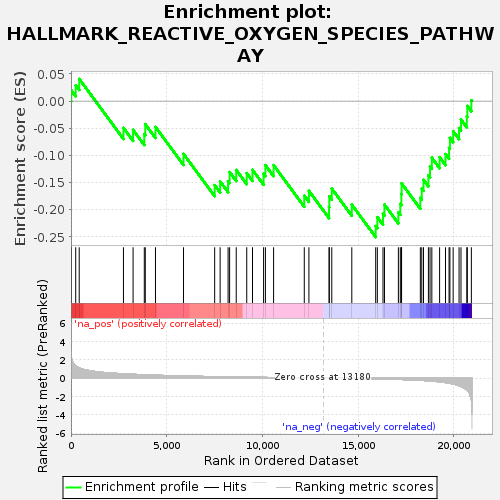
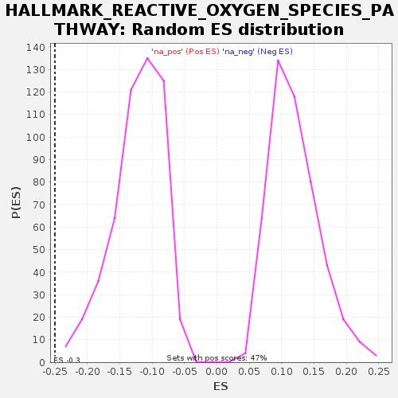

| | | Dataset | GSE18198_base_collapsed |
| Phenotype | NoPhenotypeAvailable |
| Upregulated in class | na_neg |
| GeneSet | HALLMARK_REACTIVE_OXYGEN_SPECIES_PATHWAY |
| Enrichment Score (ES) | -0.25026292 |
| Normalized Enrichment Score (NES) | -2.0396795 |
| Nominal p-value | 0.0 |
| FDR q-value | 0.00900844 |
| FWER p-Value | 0.088 |
Table: GSEA Results Summary

Fig 1: Enrichment plot: HALLMARK_REACTIVE_OXYGEN_SPECIES_PATHWAY
Profile of the Running ES Score & Positions of GeneSet Members on the Rank Ordered List
| SYMBOL | TITLE | RANK IN GENE LIST | RANK METRIC SCORE | RUNNING ES | CORE ENRICHMENT | | 1 | PRDX2 | NA | 12 | 2.495 | 0.0198 | No |
| 2 | CDKN2D | NA | 246 | 1.323 | 0.0291 | No |
| 3 | MBP | NA | 429 | 1.116 | 0.0408 | No |
| 4 | SCAF4 | NA | 2740 | 0.462 | -0.0493 | No |
| 5 | GLRX | NA | 3243 | 0.411 | -0.0529 | No |
| 6 | MGST1 | NA | 3829 | 0.360 | -0.0605 | No |
| 7 | SELENOS | NA | 3881 | 0.355 | -0.0426 | No |
| 8 | HHEX | NA | 4413 | 0.311 | -0.0476 | No |
| 9 | NDUFA6 | NA | 5878 | 0.223 | -0.0972 | No |
| 10 | MPO | NA | 7506 | 0.153 | -0.1546 | No |
| 11 | NDUFB4 | NA | 7791 | 0.142 | -0.1478 | No |
| 12 | GCLC | NA | 8207 | 0.127 | -0.1473 | No |
| 13 | NDUFS2 | NA | 8286 | 0.124 | -0.1306 | No |
| 14 | LAMTOR5 | NA | 8632 | 0.113 | -0.1267 | No |
| 15 | ERCC2 | NA | 9181 | 0.097 | -0.1325 | No |
| 16 | MSRA | NA | 9482 | 0.088 | -0.1265 | No |
| 17 | EGLN2 | NA | 10061 | 0.071 | -0.1337 | No |
| 18 | STK25 | NA | 10156 | 0.069 | -0.1178 | No |
| 19 | TXN | NA | 10584 | 0.057 | -0.1178 | No |
| 20 | SOD2 | NA | 12187 | 0.020 | -0.1741 | No |
| 21 | CAT | NA | 12429 | 0.015 | -0.1652 | No |
| 22 | TXNRD1 | NA | 13482 | -0.006 | -0.1951 | No |
| 23 | GPX3 | NA | 13495 | -0.006 | -0.1753 | No |
| 24 | GPX4 | NA | 13624 | -0.009 | -0.1610 | No |
| 25 | SRXN1 | NA | 14670 | -0.031 | -0.1906 | No |
| 26 | PTPA | NA | 15918 | -0.078 | -0.2299 | Yes |
| 27 | ABCC1 | NA | 16004 | -0.082 | -0.2135 | Yes |
| 28 | TXNRD2 | NA | 16300 | -0.095 | -0.2072 | Yes |
| 29 | SOD1 | NA | 16377 | -0.098 | -0.1904 | Yes |
| 30 | PDLIM1 | NA | 17103 | -0.139 | -0.2047 | Yes |
| 31 | NQO1 | NA | 17203 | -0.147 | -0.1891 | Yes |
| 32 | FES | NA | 17260 | -0.151 | -0.1713 | Yes |
| 33 | IPCEF1 | NA | 17270 | -0.153 | -0.1514 | Yes |
| 34 | PRDX4 | NA | 18251 | -0.242 | -0.1778 | Yes |
| 35 | PRDX6 | NA | 18325 | -0.251 | -0.1609 | Yes |
| 36 | ATOX1 | NA | 18415 | -0.262 | -0.1448 | Yes |
| 37 | GSR | NA | 18672 | -0.299 | -0.1366 | Yes |
| 38 | SBNO2 | NA | 18757 | -0.311 | -0.1202 | Yes |
| 39 | GCLM | NA | 18851 | -0.329 | -0.1043 | Yes |
| 40 | GLRX2 | NA | 19257 | -0.410 | -0.1032 | Yes |
| 41 | PRDX1 | NA | 19565 | -0.493 | -0.0975 | Yes |
| 42 | JUNB | NA | 19751 | -0.555 | -0.0860 | Yes |
| 43 | FTL | NA | 19795 | -0.576 | -0.0676 | Yes |
| 44 | PRNP | NA | 19965 | -0.640 | -0.0553 | Yes |
| 45 | LSP1 | NA | 20274 | -0.835 | -0.0496 | Yes |
| 46 | HMOX2 | NA | 20374 | -0.917 | -0.0340 | Yes |
| 47 | OXSR1 | NA | 20679 | -1.305 | -0.0281 | Yes |
| 48 | G6PD | NA | 20705 | -1.348 | -0.0089 | Yes |
| 49 | PFKP | NA | 20916 | -2.410 | 0.0015 | Yes |
Table: GSEA details [plain text format]

Fig 2: HALLMARK_REACTIVE_OXYGEN_SPECIES_PATHWAY: Random ES distribution
Gene set null distribution of ES for HALLMARK_REACTIVE_OXYGEN_SPECIES_PATHWAY